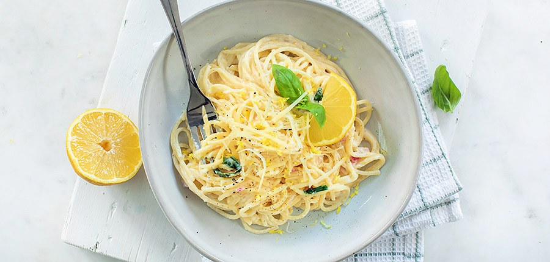

Pasta met citroen

ingredienten
- 150 gr spaghetti
- 1 citroen
- 1 uitje
- 40 gr parmezaanse kaas
- 1 teen knoflook
- 125 gr mascarpone
- peper en zout
- basilicum
bereiding
- Kook de spaghetti gaar in een pan met ruim water en een snuf zout. Als je hem afgiet vang je wat van het
kookvocht op.
- Snipper het uitje en knoflook fijn. Fruit aan in een pan met een beetje olie of boter. Rasp de citroen en
pers het sap uit. Voeg beide toe aan de pan met ui en knoflook. Roer de mascarpone erdoor. Voeg daarna de
spaghetti toe en een paar eetlepels van het kookvocht.
- Doe de geraspte Parmezaanse kaas erbij en roer alles door elkaar. Breng de citroen pasta op smaak met wat
zwarte peper en basilicum..
- Tip: voeg je graag wat groenten toe, gebruik dan bijvoorbeeld erwtjes of blokjes courgette. Of wat gebakken
garnalen.